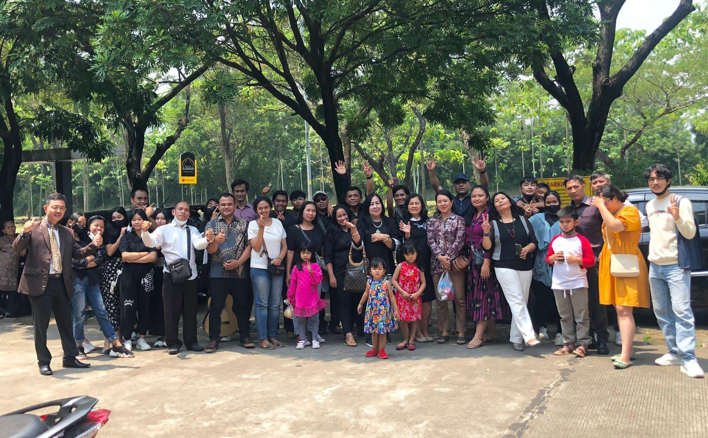

Tentang Gereja
Gereja Bethel Indonesia (GBI) Harvest City didirikan pada tahun 2011 oleh Pdt. Restu Bagiono & Pdp. Rossy Paulina sebagai bagian dari Gereja Bethel Indonesia. Sejak berdiri GBI Harvest City telah berfokus pada misi untuk melayani komunitasnya dan memperluas Kerajaan Allah melalui berbagai kegiatan rohani, sosial, dan masyarakat.

Visi & Misi Gereja
Visi
Menjadi seperti Yesus Kristus
Misi
- Mengembangkan Karakter Kristus dalam Setiap Aspek Kehidupan: Melalui disiplin rohani, doa, dan pembelajaran Alkitab, kita berupaya untuk mengembangkan kasih, kesabaran, kerendahan hati, dan semua sifat Kristus dalam kehidupan sehari-hari.
- Melayani Sesama dengan Kasih Kristus: Berkomitmen untuk melayani orang lain dengan kasih dan belas kasihan, sebagaimana Yesus melayani dan mengasihi semua orang.
- Menghidupi Nilai-Nilai Kerajaan Allah: Mengutamakan keadilan, perdamaian, dan kebenaran dalam setiap tindakan dan keputusan, mencerminkan nilai-nilai yang diajarkan oleh Yesus.
- Memberitakan Injil dengan Hidup dan Perkataan: Berusaha untuk menjadi saksi Kristus dalam dunia melalui tindakan kasih dan penyampaian Injil, menjangkau orang-orang dengan kabar baik.
- Mengikuti Teladan Yesus dalam Ketaatan kepada Tuhan: Berusaha untuk hidup dalam ketaatan penuh kepada kehendak Tuhan, sebagaimana Yesus menunjukkan ketaatan sempurna selama hidup-Nya di bumi.